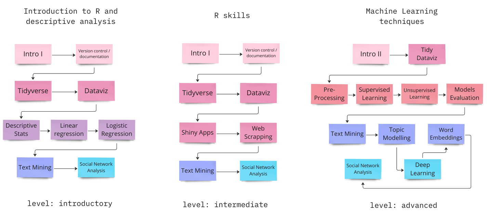

Critical Computational Social Sciences
Open Materials
Introduction
Why should data science be critical?
Quantitative analysis can be a very powerful tool to understand systemic phenomena. By translating similar experiences shared by large groups of people into data, we can identify repeating patterns. This allows us to contextualize our personal experiences and address issues from a systemic perspective, leading to more effective solutions and positive change for ourselves and the communities we are a part of.
However, data are not neutral or objective. They are the products of unequal social relations, and understanding this context is essential for conducting accurate, ethical analysis.
It is important to critically analyze data in order to avoid replicating the biases that may be inherent in the data. Standard practices in data science may serve to reinforce these existing inequalities (D’ignazio and Klein 2023).
Biases and “objectivity”
The demographics of data science, as well as related occupations such as software engineering and artificial intelligence research, are not representative of the population as a whole. The majority of individuals working in these fields are elite white men.
It is important to keep in mind that science is shaped by the unique perspectives of individual scientists, and therefore researchers’ subjectivities and biases can influence the way data sets are built and later analyzed. Therefore, it is necessary to be transparent about the context in which research is conducted as well as potential sources of bias, thus acknowledging the partiality of our perspectives. It is also important to promote a more representative workforce in data science.
Critical pedagogies for critical thinkers
For the above, we believe that critical perspective is key to tackle systemic biases that hinder the tools of data analysis to be tools for positive societal change. For this reason, these materials aim to develop a critical mindset toward the tools as they are presented. For developing this goal, our materials mix a critical analysis of the potential harms associated with the tools introduced in each material, together with the potentialities they bring for the study of inequalities, and wherever possible for the pedagogy of the courses, the use of real world data sets.
Building Blocks
The materials consists of 20 building blocks, grouped into six categories
Materials’ structure
Each block consists of four files that aim to develop the theoretical and practical content of the course

Flexible Syllabus
Depending on the goals of the course, the students’ profile, and the number of sessions, different syllabuses could be built.
Each block can be taught in one or two sessions. The suggested division is between the theoretical and practical parts, although this might not apply to every block.
Below are some examples of possible courses, but many combinations could work!
